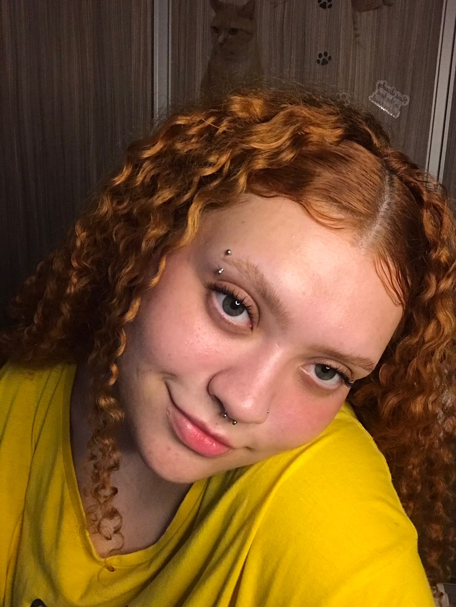

❤ Olá gateiro(a)!, seja bem-vindo. Sou a humana da Alaska e da Artemis, me chamo Gabriela, tenho 21 anos e sou momõe das gatinhas mais lindas dessa São Paulo. Sempre gostei de animais, já até cogitei cursarr medicina veterinária, mas quando se falava em gatos, sofria de um amor platônico. Quando eu ia na casa da minha madrinha, adorava fazer carinho na gatinha dela, mas não dava 5 minutos e eu estava vermelha de tanta alergia. Sempre achei que era alérgica aos pelos dos gatos, mas na verdade, anos depois, descobri que eu era alérgica a poeira e ao excesso de pelo em gatinhos que não sejam escovados. Mas infelizmente só descobri isso com 15 anos, depois de mesmo ainda achando ter alergia, consegui convencer minha mãe de deixar eu adotar uma panterinha. Minha mãe tinha superstição com gatinhos pretos, ela apesar de se sentir mal com isso, ficava cismada de ter azar durante o dia que visse um gatinho de pelagem escura. Então a mamãe decidiu ceder e deixar eu tentar ter uma gatinha mas com uma condição: Ela disse que só aceitaria se adotassemos uma gata preta, pois ela queria deixar de crer nessas superstições. E enfim consegui adotar minha mini panterinha. Ainda bem que depois de descobrir os reais gatilhos da minha alergia, e que os gatinhos não eram os culpados, pude ficar cada vez mais próxima da Tete (apelido da Atena), podendo até dormir com ela. E enfim ganhei uma melhor amiga, minha primeira e eterna gatinha, Atena. Mas como tudo não são flores, ela ficou doente quando tinha um ano e meio de idade humana, e mesmo apesar de tomar vários remédios, de tentarmos fazer ela reagir, ela não melhorou e faleceu ainda pequena. Depois disso, por eu ser tão apegada a ela, me fechei e apesar de querer adotar outra gatinha, eu ainda sentia muito a sua falta. Decidi que só iria adotar uma gatinha preta novamente. Passei dias, mais de mês procurando para adotar, e para minha surpresa, não achei uma. E então apareceu uma vizinha doando uma gatinha toda branquinha, parecendo um algodão. Eu não queria, afinal ela era branca, o oposto da Tetena. Mas minha mãe com todos os seus chavecos, conseguiu me convencer de ficarmos com ela. A princípio, ela seria do meu irmão, mas apesar de no começo não me sentir tão a vontade e feliz com a nova integrante da família, essa bolinha de algodão começou a me encantar... E assim eu escolhi o nome dela: Alaska. E eu mal sabia que ela seria tudo pra mim (e mais um pouco). Alaskinha não parece uma gata, nem uma cachorra, ela parece um serumaninho dento de um corpo de miau, ô gatinha adolescente!!! E a história de como adotei a Artemis... fica para o capítulo dois...
❤